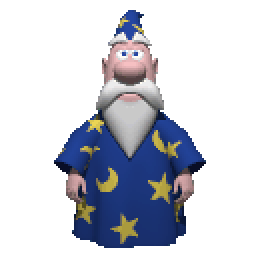

Multi-brain switching
Pick any LLM and swap on the fly. Local models run private and offline; cloud models give you frontier capability.
Anthropic
Groq
OpenRouter
Ollama
MiniMax
Hermes
The wizard from 1997 is back — wired to modern LLMs, fluent in voice, and aware of what's on your screen. Floats on your desktop. Bring your own brain.
Windows 10 / 11 · ~200MB · MIT licensed

Microsoft Agent shipped in 1997 and quietly disappeared in 2009. Clippy got the cultural memory; Merlin got the cultural shrug. We thought he deserved better — so we brought him back, this time with a brain capable of holding a conversation.
Merlin floats on your desktop the way he always did. Click him, talk to him, let him watch what you're working on. Under the cape: any LLM you like — local via Ollama, cloud via Anthropic / Groq / OpenRouter, or self-hosted via Hermes.
Six things Merlin does well. None of them require a corporate subscription, and most of them run on your machine.
Pick any LLM and swap on the fly. Local models run private and offline; cloud models give you frontier capability.
Whisper STT in, three TTS engines out — gestures sync to whatever Merlin happens to be saying.
Capture any region and ask about it. Pull in web search when local context isn't enough. He sees, he searches.
Powered by the original clippyjs engine. Drop in Clippy, Bonzi, Rocky, Genie — or your own custom sprite sheet.
Lives in the system tray with submenus for voice, brain, and character. Global hotkeys to summon him on demand.
New in v0.4 — extend Merlin with scripted abilities, new tools, and custom brain controllers. The cape has pockets.
Merlin doesn't ship with a brain — you bring your own. Here's the quick comparison.
| Brain | Type | Cost | Privacy | Speed | Best for |
|---|---|---|---|---|---|
Ollama |
Local | Free | Total | Private chat, offline use | |
Hermes Agent |
Self-hosted | Free | Total | Power users, custom rigs | |
Anthropic |
Cloud | API key | Sent to provider | Reasoning, long context | |
Groq |
Cloud | Free tier | Sent to provider | Realtime voice replies | |
OpenRouter |
Cloud | Pay-per-use | Sent to provider | Trying many models | |
MiniMax |
Cloud | API key | Sent to provider | Multilingual workloads |
No CLI required. Pick a brain when the wizard asks, then start talking.
Grab the latest .exe from GitHub Releases and run it. Merlin appears on your desktop, waiting.
screenshots/install.png ]First-time setup walks you through picking a brain provider, dropping in API keys, and choosing a voice.
screenshots/wizard.png ]Click Merlin, hold to speak, or use the global hotkey. Ask about your screen, search the web, swap characters.
screenshots/hud.png ]v0.5.1 · Windows 10/11 · ~200MB · MIT